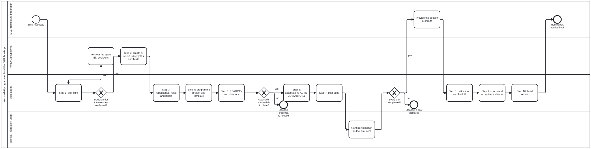

Processes
The Assured AI programme's processes, as BPMN. Each diagram says who does each step and where the work must stop. The diagram is the authority; the .checklist.md beside it is generated from it.
| Diagram | What it covers |
|---|---|
process/programme-build.bpmn (checklist) | The build sequence in section 13 of the programme requirements: pre-flight, organisation set-up, repositories, projects, READMEs, automations, pilot, bulk import, charts and the build report. It stops when a decision or the automation credentials are missing, or a pilot test fails |

The picture is drawn from the diagram; regenerate it when the diagram changes.
Lanes are roles: PM & Architecture Integration, WHO GitHub owner, Build agent and Technical Integration Lead.